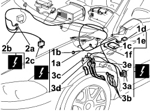
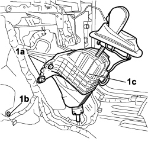
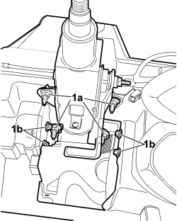
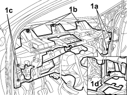

7040A98 INSTRUMENT PANEL TRIM SUPPORTING CROSSMEMBER - R.R. WITH DASHBOARD REMOVED
- Path
- Procedures > 70 FITTINGS > 7040 BODY INTERIOR FITTINGS AND TRIM > 7040A PASSENGER COMPARTMENT TRIMS > 7040A98 INSTRUMENT PANEL TRIM SUPPORTING CROSSMEMBER - R.R. WITH DASHBOARD REMOVED
- Kind
- repair procedure (removal / refitting; the operation number is the code)
- Applies to
- all engines; all production periods
- Interactive page
- https://sloeber94.github.io/elrnDB-fCrm/en/#/194001030
Applies to: all engines; all production periods
 Removing
Removing
 Refitting
Refitting- Turn the ignition key to the OFF position and extract it.
- Disconnect the negative and positive battery terminals and insulate them.
- Wait for 10 minutes before continuing.
Description | Connector | |
|---|---|---|
BATTERY |
Description | Connector | |
|---|---|---|
CLIMATE CONTROL SYSTEM CONTROL UNIT |
Description | Connector | |
|---|---|---|
INSTRUMENT PANEL |
Description | Connector | |
|---|---|---|
STEERING LOCK CONTROL UNIT (NBS) |
1. Working along the centre tunnel, disconnect the electrical connections for the gear lever (1a), the climate control system (1b), the Air Bag control unit (1c), the slewing sensor (1d) and the earth nuts (1e), (1f), for the last two components.
2. Working on the passenger side, disconnect the electrical connections (2a), (2b), (2c).
3. Working on the driver's side, disconnect the electrical connections (3a), (3b) and those for the accelerator pedal (3c), brake pedal (3d) and clutch pedal (3e).
Description | Connector | |
|---|---|---|
1a | AUTOMATIC TRANSMISSION GEAR SELECTOR CONTROL UNIT |
Description | Connector | |
|---|---|---|
1b | DASHBOARD/AIR CONDITIONING - HEATER COUPLING |
Description | Connector | |
|---|---|---|
1c | AIR BAG CONTROL UNIT |
Description | Connector | |
|---|---|---|
1d | SLEWING CONTROL UNIT |
Description | Connector | |
|---|---|---|
1e | AIR CONDITIONING UNIT EARTH |
Description | Connector | |
|---|---|---|
1f | AIR BAG SYSTEM EARTH |
Description | Connector | |
|---|---|---|
2a | HI FI SYSTEM COUPLING |
Description | Connector | |
|---|---|---|
2b | DASHBOARD/REAR COUPLING |
Description | Connector | |
|---|---|---|
2c | DASHBOARD/REAR COUPLING |
Description | Connector | |
|---|---|---|
2c | PASSENGER SIDE DASHBOARD EARTH |
Description | Connector | |
|---|---|---|
3a | SHORT CIRCUITING COUPLING |
Description | Connector | |
|---|---|---|
3b | FRONT/DASHBOARD COUPLING |
Description | Connector | |
|---|---|---|
3c | ACCELERATOR PEDAL POTENTIOMETER |
Description | Connector | |
|---|---|---|
3d | BRAKE PEDAL SWITCH |
Description | Connector | |
|---|---|---|
3e | CLUTCH PEDAL SWITCH |

Applies to: all engines; all production periods
1. Undo the bolts (1a) fixing the gear lever support, undo the bolts fixing the air conditioning casing to the crossmember (1b) and move the gear lever support assembly (1c) aside.

Applies to: all engines; all production periods
1. Undo the bolts (1a) fixing the steering column and the bolts (1b) fixing the dashboard supporting crossmember.

Applies to: all engines; all production periods
1. Undo the bolts (1a), (1b), (1c), (1d) fixing the dashboard supporting crossmember.

Applies to: all engines; all production periods
Op. 5505C30 BUILT-IN WIRING UNDER DASHBOARD - R.R. WITH DASHBOARD TRIM REMOVED
Applies to: all engines; all production periods
Refitting
RemovingOp. 5505C30 BUILT-IN WIRING UNDER DASHBOARD - R.R. WITH DASHBOARD TRIM REMOVED
- Place the dashboard supporting crossmember in its housing in the vehicle and tighten the fixing bolts.
Component | Fastening | dia | Value (daNm) | Validity |
|---|---|---|---|---|
CROSSMEMBER TO BODYSHELL (LEFT/RIGHT BRACKET) | Bolt | M10x1.25 | 3,15 ÷ 3,85 |
- Tighten the bolts fixing the steering column to the dashboard supporting crossmember.
Component | Fastening | dia | Value (daNm) | Validity |
|---|---|---|---|---|
STEERING CONTROL TO DASHBOARD | Nut | M8 | 1,2 ÷ 1,8 |
- Tighten the bolts fixing the gear lever support.
Component | Fastening | dia | Value (daNm) | Validity |
|---|---|---|---|---|
AUTOMATIC CONTROL ON DASHBOARD CROSSMEMBER | Bolt | M8 | 2,25 ÷ 2,75 | 2.2 1.9 JTD 16v 2.4 JTD 20v |
- Tighten the bolts fixing the air conditioning casing to the dashboard supporting crossmember.
- Connect all the electrical connections for the cable loom under the dashboard.
Description | Connector | |
|---|---|---|
AUTOMATIC TRANSMISSION GEAR SELECTOR CONTROL UNIT |
Description | Connector | |
|---|---|---|
DASHBOARD/AIR CONDITIONING - HEATER COUPLING |
Description | Connector | |
|---|---|---|
AIR BAG CONTROL UNIT |
Description | Connector | |
|---|---|---|
SLEWING CONTROL UNIT |
Description | Connector | |
|---|---|---|
AIR CONDITIONING UNIT EARTH |
Description | Connector | |
|---|---|---|
AIR BAG SYSTEM EARTH |
Description | Connector | |
|---|---|---|
HI FI SYSTEM COUPLING |
Description | Connector | |
|---|---|---|
DASHBOARD/REAR COUPLING |
Description | Connector | |
|---|---|---|
PASSENGER SIDE DASHBOARD EARTH |
Description | Connector | |
|---|---|---|
SHORT CIRCUITING COUPLING |
Description | Connector | |
|---|---|---|
FRONT/DASHBOARD COUPLING |
Description | Connector | |
|---|---|---|
ACCELERATOR PEDAL POTENTIOMETER |
Description | Connector | |
|---|---|---|
BRAKE PEDAL SWITCH |
Description | Connector | |
|---|---|---|
CLUTCH PEDAL SWITCH |
- Connect the battery terminals.
Description | Connector | |
|---|---|---|
BATTERY |
Topics linked from this page (20)
- 5505C30 BUILT-IN WIRING UNDER DASHBOARD - R.R. WITH DASHBOARD TRIM REMOVED
- 5580C AIR BAG SYSTEM
- A001 BATTERY
- C016 AIR CONDITIONING UNIT EARTH
- C020 PASSENGER SIDE DASHBOARD EARTH
- C050 AIR BAG SYSTEM EARTH
- D001 FRONT/DASHBOARD COUPLING
- D020 DASHBOARD/REAR COUPLING
- D021 DASHBOARD/AIR CONDITIONING-HEATER COUPLING
- D068 HI-FI SYSTEM COUPLING
- D097 SHORT CIRCUIT COUPLING
- E050 INSTRUMENT PANEL
- I030 BRAKE PEDAL SWITCH
- I031 CLUTCH PEDAL SWITCH
- K055 ACCELERATOR PEDAL POTENTIOMETER
- M053 AUTOMATIC TRANSMISSION GEAR SELECTOR CONTROL UNIT
- M060 AIR BAG CONTROL UNIT
- M070 CLIMATE CONTROL SYSTEM CONTROL UNIT
- M089 STEERING LOCK CONTROL UNIT (NBS)
- M091 SLEWING CONTROL UNIT
Topics that link to this page (11)
- 5040C10 AIR CONDITIONING CASING - R.R
- 5040C12 AIR CONDITIONING CASING - R.R. WITH DASHBOARD REMOVED
- 5040C50 AIR CONDITIONING HEATER RADIATOR - R.R.
- 5040C64 A/C EVAPORATOR - R+R
- 5040D80 AIR CONDITIONER SYSTEM WIRING BUNDLE - R R OR REPLACE
- 5040D94 AIR CONDITIONING LEFT UPPER AIR DISTRIBUTION FLAP MOTOR (DEFROST) - R.R
- 5505C10 FRONT CROSSMEMBER WIRING - R.R
- 5505C30 BUILT-IN WIRING UNDER DASHBOARD - R.R. WITH DASHBOARD TRIM REMOVED
- 5505C31 BUILT-IN WIRING UNDER DASHBOARD - R.R.
- 7040A97 INSTRUMENT PANEL TRIM SUPPORTING CROSSMEMBER - R.R
- 7095E22 SOUND-PROOF PANEL UNDER DASHBOARD SUPPORTING CROSSMEMBER - R.R.